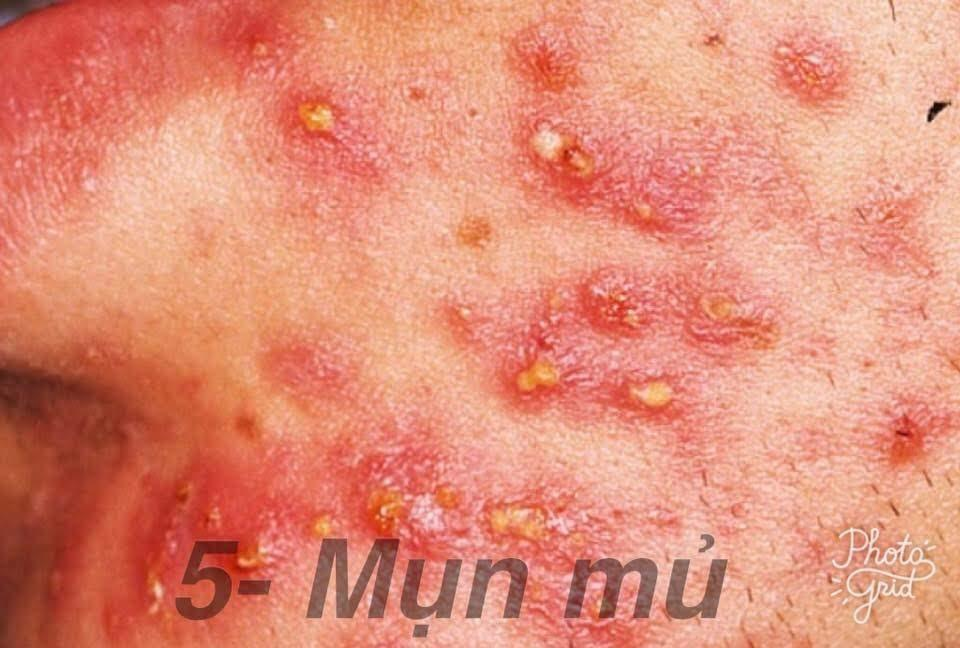

ĐIỂM DANH 12 LOẠI MỤN THƯỜNG GẶP - Phần 1
Mụn đầu đen
Đây là loại mụn phổ biến và dễ gặp nhất. Mụn đầu đen thường nằm trên bề mặt da, hình thành do hỗn hợp dầu nhờn thừa + bụi bẩn và tế bào chết trên mặt. Vì mụn đầu đen khiến lỗ chân lông mở to nên nó sẽ tiếp xúc với không khí, từ đó bị oxy hóa và đổi thành màu đen. Nhân mụn đầu đen thường là hạt cứng.
Mụn đầu đen thường hình thành ở T-zone (đặc biệt là vùng mũi) và 2 bên má gần mũi. Mặc dù không gây quá mất thẩm mỹ nhưng nếu bạn để mặc cho mụn đầu đen hoành hành lâu ngày thì lỗ chân lông của bạn chắc chắn sẽ bị to ra.
Đối phó với mụn đầu đen thì việc quan trọng nhất là:
LÀM SẠCH, LÀM SẠCH VÀ LÀM SẠCH.
Mụn đầu trắng
Mụn đầu trắng cơ bản là giống mụn đầu đen. Điểm khác biệt duy nhất là mụn đầu trắng không làm lỗ chân lông mở mà nó chỉ làm tắc thôi, vì vậy nó không bị tiếp xúc với không khí, không bị oxy hóa nên không đổi màu.
Đối phó với mụn đầu trắng vẫn là: LÀM SẠCH, LÀM SẠCH VÀ LÀM SẠCH.
Sợ bã nhờn
Sợi bã nhờn được hình thành bởi hỗn hợp vi khuẩn, lipid và tế bào chết xung quanh nang lông.
Thoạt nhìn sợi bã nhờn thường nhỏ li ti, hay mọc thành cụm khi nặn ra thì nó là sợi nhỏ, dài và trắng.
Sợi bã nhờn thường gặp ở vùng cằm dưới môi và 2 bên rìa mũi. Nếu để da bình thường thì sẽ không thấy sợi bã nhờn, chỉ khi căng da lên mới thấy những đầu trắng li ti mọc cạnh nhau và đây chính là sợi bã nhờn (còn mụn ẩn cũng phải căng da ra mới nhìn thấy, nhưng sẽ không thấy đầu mụn nào hết). Sau khi sợi bã nhờn được lấy ra thì lỗ chân lông chứa sợi bã nhờn đó sẽ được lấp đầy theo đúng chu kì thay da.
Mụn sẩn (Papules)
Đây là loại mụn phát triển khi mụn đầu đen và đầu trắng bị viêm, tạo thành các nốt mụn đỏ hoặc hồng nhỏ trên da, thường không thấy đầu mụn. Đây là loại mụn rất nhạy cảm khi chạm vào.
Nếu bạn nặn hoặc ép mụn sẽ làm tình trạng viêm nặng hơn và có thể dẫn đến sẹo.
Nếu da có nhiều mụn sẩn thì khả năng các mụn viêm khác sẽ hình thành là rất cao.

Mụn mủ (Pustules)
Mụn mủ là một bước phát triển mới của mụn sẩn. Các vết sưng thường có nhiều mủ màu trắng hoặc vàng bên trong nên nhìn khá to.
Tuyệt đối không nặn và bóp cho đến khi đầu trắng xuất hiện rõ. Hơn nữa đây mới chỉ là giai đoạn mụn SẮP chín, nếu nặn với bàn tay bẩn và không hết nhân thì sẽ làm viêm nhiễm nặng hơn, đồng thời làm viêm luôn cả các nông lang bên cạnh.
Đặc điểm nhận dạng là nhìn giống mụn đầu trắng với vòng đỏ bao quanh và bị sưng.
Mụn u (Nodules)
Nốt to, viêm và thấy cứng khi chạm vào. thường sẽ không thấy đầu mụn. Mụn u phát triển sâu bên trong da và thường gây đau.
Mụn u mang tính chất nghiêm trọng hơn mụn mủ rất nhiều.